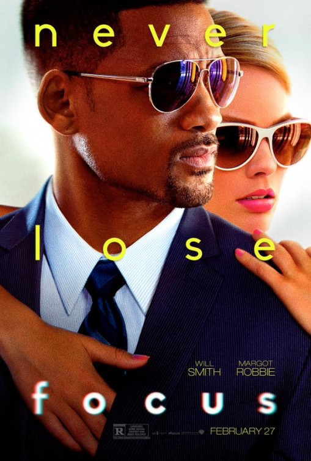
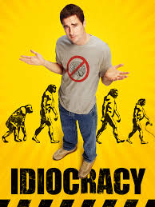
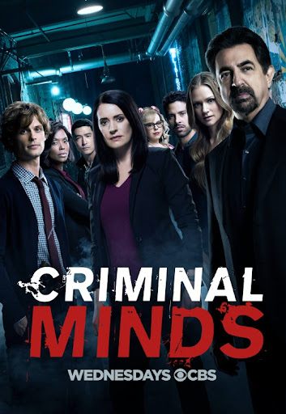

Focus
komedi, Suç, Dram
Fokus, Glenn Ficarra ve John Requa tarafından yazılıp yönetilen, başrollerini Will Smith ve Margot Robbie'nin paylaştığı 2015 Amerikan suç komedi-drama filmidir.

Idiocracy
Komedi, Bilim Kurgu
Idiocracy, Mike Judge tarafından yönetilen 2006 yapımı kara mizah filmi. Filmin senaryo yazarlığını Mike Judge ile Etan Cohen üstlenmiştir. Filmde başrolleri Luke Wilson, Maya Rudolph ve Dax Shepard paylaşmıştır. Film, Pensilvanya, Louisiana ve Oregon'da çekilmiştir.

Star Wars III Revenge of the Sith
Aksiyon, Macera, Fantastik
Yıldız Savaşları: Bölüm III - Sith'in İntikamı, Yıldız Savaşları serisine ait 2005 yılı yapımı bir bilimkurgu filmi. Senaristi ve yönetmeni George Lucas'dır. Film yapım sırasına göre serinin altıncı filmidir. Fakat hikâyenin kronolojik sıralamasına göre üçüncü filmidir. Film 19 Mayıs 2005 tarihinde vizyona çıkmıştır.

The Office
Komedi
The Office, kurgusal bir şirket olan Dunder Mifflin Paper Company'nin Scranton, Pensilvanya'daki şubesinin ofis çalışanlarının günlük çalışma hayatlarını anlatan bir Amerikan sahte belgesel durum komedisi televizyon dizisidir. 24 Mart 2005'ten 16 Mayıs 2013'e kadar toplamda 9 sezon boyunca NBC'de yayınlandı.

Criminal Minds
Suç, Dram, Gizem
Criminal Minds, ilk yayınına 22 Eylül 2005 tarihinde başlayan ABD'nin CBS kanalında yayınlanmış eski polisiye dizisi. Seri, Quantico, Virginia merkezli bir FBI Davranış Analiz Birimi'ndeki profilcileri ele alır. BAU Şiddet Suç Analizi, FBI Ulusal Merkezi'nin bir parçasıdır.